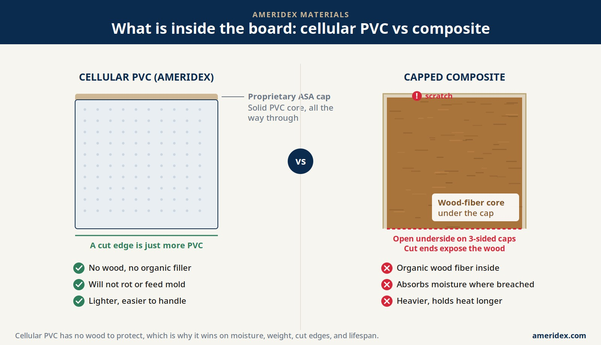

Walk into any decking showroom and the boards look almost identical. Same realistic grain, same rich colors, same low-maintenance promise. The salesperson tells you both are wood-alternative, both resist rot, both carry a long warranty. So why does AmeriDex build its Dryspace System on a cellular PVC board instead of composite? Because what is inside the board, not the finish on the outside, determines how it handles water over twenty-five years. Here is the honest breakdown, and why cellular PVC prevails every time when the goal is a dry deck.
The one difference that drives all the others: wood fiber
Composite decking is a blend. It mixes recycled plastic with organic wood flour or wood fiber, extrudes that blend into a board, and wraps a polymer cap around it to keep moisture out. Cellular PVC is different in the most basic way possible: it has no wood in it at all. AmeriDex deck boards are cellular PVC boards with a proprietary ASA cap, with zero organic filler in the core. There is nothing inside the board that can absorb water, feed mold, or rot.
That single material choice is the root of every advantage that follows. Once you put wood fiber inside a board, you spend the rest of the board's life protecting that wood from the one thing it cannot survive: trapped moisture.
Composite is only as good as its cap, and caps get breached
Composite manufacturers know the wood-fiber core is the weak point, so they cap it. A four-sided cap protects all the way around. Many lines, though, are only three-sided, leaving the bottom exposed and relying on airflow to keep it dry. Either way, the protection lives on the outside surface, and the surface gets compromised in the real world.
Every cut. The moment a board is cut to length or notched around a post, the exposed wood-fiber core is open to water at the cut end. Cellular PVC is the same material all the way through, so a cut edge is just more PVC.
Every scratch and screw. Dropped tools, dragged furniture, and fastener holes nick the cap. Each nick is a doorway for moisture into the wood inside.
Three-sided caps. A cap that stops at the bottom leaves the underside open by design, which matters most on low or shaded decks where the air never fully dries the board.
Once water reaches the wood fiber, it does what water always does to wood. The fiber swells, the board can cup or develop soft spots, and in damp, shaded conditions it can mold from the inside. A cellular PVC board has no inside to protect, so a scratch is cosmetic, not structural.
Side by side, where it counts
Stack the two materials against the things that actually decide how a deck ages, and the wood-free board comes out ahead on every line that involves water or weight.
Composite (capped wood fiber)
- Organic wood fiber inside the core
- Cut ends and scratches expose the wood
- Absorbs moisture where the cap is breached
- Heavier board, retains more heat
- Typical lifespan around 25 to 30 years
Cellular PVC (AmeriDex)
- No wood, no organic filler, anywhere
- Cut edges are simply more PVC
- Impervious to moisture, will not rot or feed mold
- Lighter board, easier to handle on site
- Built to last well past the warranty term
Two of these deserve a note. On weight, cellular PVC is the lighter board, which makes a real difference for the crew handling it and for the load the framing carries. On heat, color matters most for both materials, but the heavier composite tends to hold heat longer once the sun goes down. Neither material rots like wood, and that is exactly the point: the meaningful question is no longer wood versus plastic, it is which wood-alternative core actually has no wood in it.
Composite spends its whole life protecting the wood inside it. Cellular PVC has nothing to protect.
Why the core matters even more in a sealed dry deck
Choosing a board is one decision. Building a deck that keeps the space underneath dry is another, and it raises the stakes on the core material. The AmeriDex Dryspace System locks every cellular PVC deck board onto a Dexerdry seal, an automotive-grade TPE component, as the deck is built. The seal closes the gap between the boards so rain runs across the surface and sheds off the edge instead of falling through onto the framing.
In that system the boards are doing real water-management work, holding the seal and carrying runoff to the edge. You do not want the structural element of a waterproofing system to be a board that can absorb moisture at any cut or scratch. A wood-free cellular PVC board is the right partner for the seal precisely because it is dimensionally honest and indifferent to water, top, bottom, and every cut edge.

If you want the full mechanics of how the boards and seal work together, the above-joist deck drainage guide covers it in detail, and why decks rot from the top down explains the moisture cycle that makes the core material such a big deal in the first place.
The takeaway is simple. Composite is a genuine upgrade over wood, but it still carries wood fiber inside a cap that the real world eventually breaches. Cellular PVC removes the wood from the equation entirely, which is why it wins on moisture, weight, cut edges, and lifespan, and why it is the board AmeriDex builds the Dryspace System around. If you are planning a new deck, request free samples to feel the difference yourself, and start a free quote to size the system for your project.